非常珍贵的动物系果实，吃了这个果实可以得到和人类同等的高智力、学习能力、双脚走路等人类特有的能力，当动物吃下的话，能理解人类和动物双方的语言。拥有三段变形，人型态、人兽型态及兽型态。
托尼托尼·乔巴
托尼托尼·乔巴，日本漫画《航海王》及其衍生作品中的角色，草帽一伙的船医，吃了人人果实的驯鹿，可用蓝波球进行八段变形。 蓝色的鼻子，头戴一顶粉红色礼帽，草帽一伙的第六位成员，职业是船医。原为磁鼓岛Dr.库蕾哈医生最宠爱的驯鹿兼医疗助手 [1]。乔巴的恩人是“庸医”希鲁鲁克，他身为野生驯鹿时本来没有名字，“乔巴”也是由希鲁鲁克给他命名的，意思是他有一对连树木都可以轻松砍倒的角。
人际关系
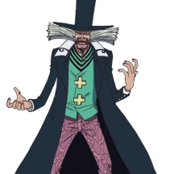
养父—希鲁鲁克
.jpg)
好友—路飞
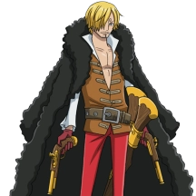
好友—山治
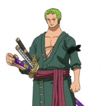
好友—索隆
| 中文名 | 托尼托尼·乔巴 | 所属船只 | 千里阳光号 |
|---|---|---|---|
| 外文名 | チョッパー | 悬赏 | 50贝里 → 100贝里 → 1000贝里 |
| 配音 | 大谷育江、伊仓一惠（休业期间代役） | 恶魔果实 | 动物系·人人果实·人形态 |
| 性别 | 男 | 代表颜色 | 粉红色 |
| 登场作品 | 《海贼王》及其衍生作品 | 代表数字 | 06 |
| 生日 | 12月24日 | 喜欢的食物 | 棉花糖等所有甜食 |
| 年龄 | 15 - 17岁（以人类而言） | 讨厌的食物 | 所有辣味食物（因为不甜） |
| 身高 | 90cm（人兽型） |
能力设定
恶魔果实
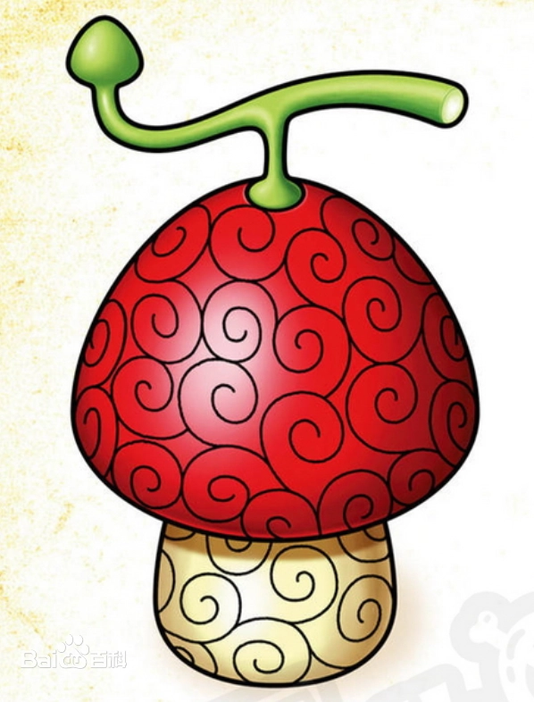研究成果
蓝波球（Rumble）
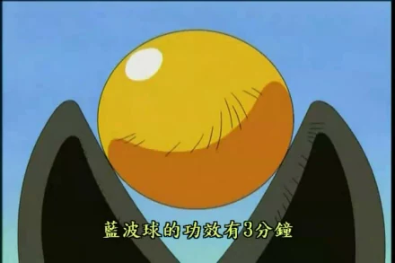一种可以扰乱动物系恶魔果实的变形波长的药物，由乔巴研究出来，不过效力只有三分钟。可以额外产生七个变形阶段。乔巴服用后可以暂时具有重量强化、跳跃强化、毛皮强化、腕力强化、头脑强化、角强化、脚力强化等能力。但是此药物是种春药，若在六小时内服用第二颗时，则无法控制变形波长，服用第二颗时，会失去意识，恶魔果实会开始暴走，会变成一个巨型“怪物”。虽然拥有强大无比的破坏力，但因为无法控制力量，生命力会急速下降，若不赶紧打麻药或将能力者推入海中（用海楼石也可以）使恶魔果实无力化或停止他的行动，将会有生命危险。新世界后学会控制暴走。
多段变身
人兽形态常态的乔巴长得很像一只狸猫，乔巴很不喜欢自己被说成是狸猫，乔巴平时会以这种形态出现。 |
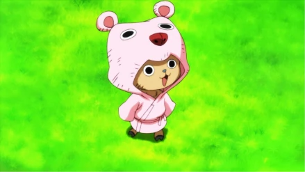 |
人形态以攻击为主力，头上的鹿角退化，变成人类的形态，但并不完全，因为兽形态时的体毛还在，所以比较像猩猩。两年后变的更大，被索隆称“更像怪物了”。 |
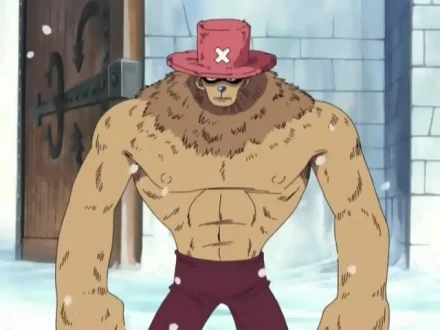 |
跳跃强化弹跳力极高，特征是人手的手臂、兽型的双腿以及鹿角退化的兽型脸孔。 |
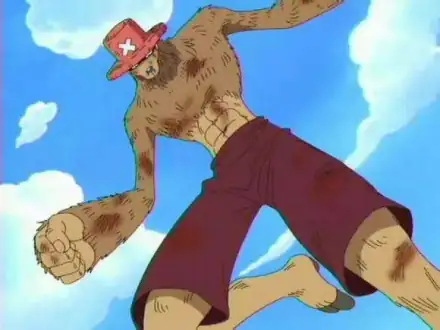 |
角色经历
早年经历
很多年前的一天，乔巴身受重伤倒在暴风雪中，遇到了当时被亲卫队追捕的庸医希鲁鲁克医生，当时乔巴已经不相信任何人，又看见希鲁鲁克的身上有手枪（实为麻醉枪），因此发狂攻击他。希鲁鲁克医生为表清白，遂脱光衣服并说：“我绝对不会对你开枪的”。
乔巴认定希鲁鲁克医生没有要伤害他意图，却因为伤重而晕倒，在希鲁鲁克的紧急治疗下才勉强保住了性命，醒来后的乔巴看到了希鲁鲁克放在一旁的面包，一口咬下面包的同时，他也对第一次有人肯接受他这件事而痛哭流涕，之后乔巴为了养伤在希鲁鲁克家住了下来。希鲁鲁克医生把乔巴当成自己儿子般细心照顾，并将自己的经历当成故事告诉乔巴。
原来，希鲁鲁克曾经是遥远西边国家的大盗，却得了严重的心脏病，某天因为看到满山遍野盛开的樱花，深受感动而病愈，于是他舍弃了大盗的身分，决心要用“骷髅头”医治因现任国王瓦尔波的暴政而生病的磁鼓岛，同时他也鼓励乔巴出海到广大的世界探索。
和希鲁鲁克医生的相遇，让乔巴第一次感受到人间温暖。直到一年后，乔巴的伤势已经完全恢复，希鲁鲁克医生却发现自己罹患绝症，来日已不多，为了不让乔巴担心，于是忍痛将他赶走，当希鲁鲁克求医于磁鼓岛的“魔女”朵丽儿医娘时，乔巴偷偷听见了两人的谈话，得知希鲁鲁克只剩十天寿命，故跋山涉水寻找可以治病的“阿密乌菇”，途中遇到驯鹿群，乔巴试图从驯鹿群身边走过却反遭驯鹿首领攻击，在他战胜驯鹿首领并且想采集阿密乌菇时，再度被驯鹿群围攻导致左边的鹿角断掉。 [26] 希鲁鲁克暗中恳求朵丽儿医娘收留乔巴，朵丽儿医娘原先以为希鲁鲁克在开玩笑而将他赶出去，事后她却发现似乎有些不对劲，并赶到希鲁鲁克家时，家中只剩下乔巴在休养，希鲁鲁克为医治生病的“医生20”已经动身前往磁鼓国的城堡，乔巴得意洋洋的拿出阿密乌菇，告诉朵丽儿医娘他用这个治好了希鲁鲁克的恶疾，反被狠狠训了一顿，原来乔巴历经千辛万苦找到的“阿密乌菇”，其实是一种剧毒菇。希鲁鲁克明知道乔巴弄错了，但为了感谢他的心意以及不忍心让他失望，明知道是剧毒菇仍然喝下了阿密乌菇煮成的汤，因此反而缩短了他的性命，使得原本不到10天的寿命缩短只剩下半天可活。
希鲁鲁克赶到城堡后，发现医生20生病的消息是磁鼓国国王瓦尔波设下诱捕的陷阱，但他为此对国家没发生任何大事感到相当高兴，他深信自己就算死了也能够医治国家的恶疾，随后大喊着“我的人生……真的是太美好了”并饮下装设炸弹的酒自杀身亡，瓦尔波看到这样的结果，内心不但没任何惭愧之意，反而将希鲁鲁克的死视为一个大笑话，令目赌一切的乔巴相当震怒，于是冲向瓦尔波的军队打算和他们玉石俱焚，被瓦尔波的干部之一多尔顿给阻止。多尔顿为瓦尔波的所作所为跟乔巴道歉，也表示不希望再看到任何像希鲁鲁克一样为了国家和平而牺牲的人丧命，乔巴才终于打消为希鲁鲁克报仇的念头。 希鲁鲁克过世后，乔巴继承了他的遗志，立志成为能够医治所有疾病的万能药，并向朵丽儿医娘学习医术。
初遇伙伴
乔巴的初次登场，是和Dr.库蕾哈医生一同到磁鼓岛的城镇“凯斯特”寻找病患的时候，后来因协助治疗感染病毒的娜美，及身受重伤的路飞和山治而首次接触草帽一伙。 在与病愈的娜美谈天时，乔巴流露出对海贼的憧憬，娜美因此邀请他以医生的身份加入，但他却以“自己是驯鹿，不能跟人类在一起”的理由推卸了。
库蕾哈医生听到他们的对话，将乔巴的身世及想寻找伙伴的心结告诉娜美，并希望他们能治好他长久以来的“心病”。
路飞在打倒瓦尔波后，多次邀请乔巴加入成为伙伴（但路飞并不知道乔巴是医生，只因觉得他很有趣而已），但乔巴的内心却一直交战着，反复认为自己是驯鹿所以没资格加入。
经历一整天的“邀请”与“逃避”，路飞使尽最大的嗓子对乔巴喊叫：“少啰唆，跟我们走就是啦”，这一喊不但冲走了乔巴的犹豫，也给予他出海的勇气。
在向库蕾哈医生道谢以后，乔巴便随着草帽一伙离开，并正式成为他们第六位成员。
阿拉巴斯坦篇
在阿拉巴斯坦乔巴与乌索普联手击败贝布与多萝菲双人组，当路飞在祭葬殿击败了当时的王下七武海之一的沙·克洛克达尔之后，路飞利用自身的能力特性，将索隆与乔巴一起带回地表和其他人会合。而罗宾在黄金梅丽号现身时，乔巴虽然一开始对罗宾有着几分畏惧，但因为罗宾利用“花花果实”的能力对路飞开玩笑，使得乌索普与乔巴跟着路飞起哄大笑之余，对罗宾也不再像先前那么顾忌。
空岛篇
乔巴战胜了四神官的盖达兹，却接连败在四神官之一的欧姆手上。
而后在长链岛与福克西海贼团举办竞赛时，乔巴和罗宾一度因为被对方选定为俘虏的船员，使得两人只得在一旁观赛，索隆更因为乔巴被对方选走讲出的丧气话出言训斥他。由于路飞最后战胜了福克西，乔巴和罗宾顺利回归草帽一伙。
后来草帽一伙遇上了三大将之一的“青雉”库赞展开决战不幸败北，路飞、索隆、罗宾、山治更因此遭到冻伤，乌索普与娜美协助乔巴将冻伤的四人带回黄金梅丽号，而乔巴也在事后帮助四人处理冻伤的伤势。
司法岛篇
由于乌索普被弗兰奇一家殴打并抢走两亿贝里一事，乔巴跟着路飞、索隆、山治大闹弗兰奇一家的基地为乌索普报仇。他和罗宾逛街的时候，最先警觉到罗宾失踪的状况，和山治再次遇到罗宾劝她归队，但因为罗宾坚持离开只得无功而返。
在司法岛事件中，索隆和狙击王（乌索普）的手在战斗中不小心被“海楼石手铐”铐在一起而无法战斗，两人要乔巴去找能解开手铐的“2号钥匙”，乔巴却在寻找钥匙的途中意外卷入了娜美与CP9之一偎取的战斗，而在同时，山治为了守住自己的骑士道，被CP9之一的卡莉法击败，摔落在娜美与乔巴两人的面前，乔巴让娜美去找卡莉法，自己则是留下来和偎取战斗，但面对偎取压倒性的力量，乔巴很快就处于劣势，为了赌自己的胜算而吞下了第三颗“蓝波球”，以暴走型态击倒了偎取，但却因此变的敌我不分，开始疯狂攻击自己眼前所看到的一切，后来弗兰奇听从娜美的建议，以一发“风来炮”将乔巴打落下海才解除了危机，从伙伴们救回罗宾到全员搭乘黄金梅丽号逃走的期间，乔巴的身体一直处于动弹不得的状态。
司法岛事件结束后，因为没有任何海军目击到乔巴战斗而把他当成宠物，悬赏金只有50贝里，让他很不能接受。在弗兰奇加入后，躲过海军的追击，开始新的航程。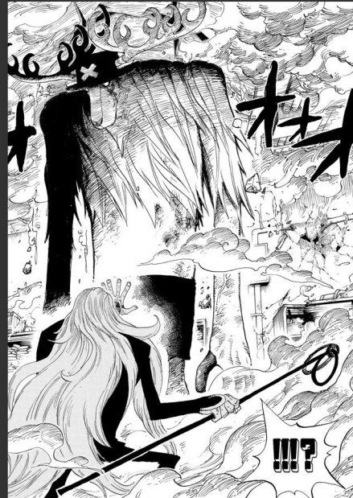
恐怖三桅帆船篇
乔巴知道了对自己所崇拜的名医霍古巴克为什么会加入月光·莫利亚一伙，对玩弄生命的行为感到相当愤怒，并以自己的力量，成功让僵尸辛朵莉身为人类时的心彻底反抗霍古巴克命令，成功打败了霍古巴克，路飞击败了“王下七武海”之一的月光·莫利亚后，同为“王下七武海”之一的“暴君”巴索罗米·熊奉世界政府之命要抹杀草帽一伙，因为和伙伴拒绝交出路飞的人头，被“熊掌冲击”击中不省人事。
香波地群岛篇
在香波地群岛和伙伴合力打倒了和平主义者PX-4， 但已无力招架随后出现的战桃丸等人，并和路飞、罗宾一组，打算逃出无法地带，眼看伙伴一个个被和平主义者PX-1击倒而陷入恐慌，再度使用第三颗“蓝波球”变成暴走型态，仍然被巴索罗米·熊的肉球能力弹飞。
特里诺王国篇
被弹飞的乔巴掉落到南海的“鸟类王国”特里诺王国，遭巨鸟从巢中踢走后被当地居民捕获。差点被煮熟的乔巴成功脱险，同时目睹了巨鸟与居民的对战。 待在特里诺王国期间，乔巴化解了村民与巨鸟之间的误解，使大家和平共处；后乘骑巨鸟前往香波地群岛与伙伴们会合，途中却从报纸中得知路飞在“大事件”后的消息。在读得“只有伙伴才能明白的讯息”后，为了汲取更多知识以获取更强的力量，折返特里诺王国，向居民请教有关当地草药的相关知识。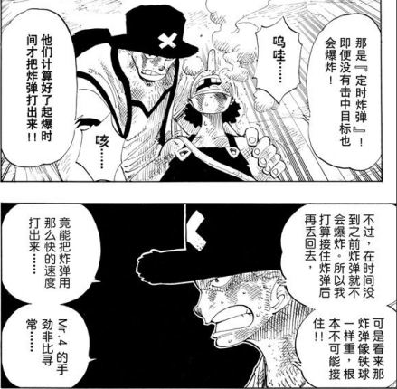
两年后重聚篇
两年后的乔巴，头上配戴的粉红帽子变成有交叉图案的兜帽，已经学会控制暴走。兽型状态下的体格也变得比以往健壮，毛质也更蓬松。
他比山治、布鲁克、路飞、罗宾早一天抵达了香波地群岛，并且在香波地群岛的游乐园区，遇上假草帽一伙的团员企图拐骗他，后来因为其他人口贩子将假扮罗宾的海贼带走，乔巴这才意外脱险，他却误认真正的罗宾被人口贩子绑架而惊慌不已。
及后他再次遇见假草帽一伙，误认他们是真正的草帽一伙并告知罗宾被掳走一事，但乔巴由于假草帽一伙对此不予理会而泪奔离去。和真正的乌索普与娜美相会后，乔巴才惊觉先前遇到的“草帽一伙”是冒牌货，虽然生气有人冒充他们，但又对自己似乎已经变出名这件事感到相当开心。当海军前来捉拿草帽一伙时，先前在特里诺王国受到乔巴帮助的巨鸟，将路飞、索隆、山治、乔巴运回到万里阳光号上，乔巴感谢巨鸟的协助并向它道别。草帽一伙全员集合于万里阳光号后跟着伙伴们一同下潜“鱼人岛”。
鱼人岛篇
乔巴发现山治开始容易在见到美女时狂喷鼻血，利用照片协助山治作矫正治疗，当山治苏醒后，发现路飞中毒但是没事，随后继续照料山治。当“库拉肯”（挪威海怪）袭击万里阳光号的时候，乔巴为了保护万里阳光号，进行“毛皮强化”，顺利的为万里阳光号与船上的同伴挡下库拉肯的强力冲击。 进到鱼人岛后，一行人被激烈的海流冲散，先前在香波地群岛认识的人鱼凯米救了路飞、乌索普、山治和乔巴。当山治因为无法压抑对人鱼的好奇心，喷出超过平常失血量的鼻血时，凯米带着路飞等人来到珊瑚之丘，由乔巴为山治进行输血急救。之后在山治和乔巴打倒前来拘提他们的龙宫城卫兵，发现被范德·戴肯九世打至重伤的小八，从小八口中得知霍迪·琼斯与范德·戴肯九世合作联手进攻龙宫城的消息，还和路飞与白星公主会合。
庞克哈萨德篇
抵达庞克哈萨德后，起初没有随路飞一起上岛，然后娜美、山治、乔巴、弗兰奇吸入不明气体，被戴着面具的人士关在一栋牢房里。 [43]清醒后，一行人顺势带着一颗会说话的武士头（实为遭特拉法尔加·罗运用果实能力将其身体分离的和之国武士狐火锦卫门）离开牢房，却在逃亡途中闯进一群巨大小孩的房间里。乔巴和其他伙伴接受娜美的委托，帮忙救出这群小孩，结果一行人逃出建筑物的同时遇上了为了捉拿路飞而来到此处的斯摩格、达斯琪，以及升迁为新任七武海的特拉法尔加·罗，被罗运用“手术果实”能力和伙伴身心对调，心脏转移到山治的身体，身体则被换成弗兰奇的心脏。 [44]其后乔巴对小孩收集血液样本检验，得知小孩们被凯撒·库朗长期喂食兴奋剂“NHC10”而无法脱逃而感到愤怒。
为了营救待在弗兰奇体内、被雪山兄弟掳走的娜美，乔巴特地将蓝波球交给待在自己体内的弗兰奇并说明药品的副作用，岂料弗兰奇过于心急发动“怪物型态”加上路飞以“橡胶象枪”重击暴走的弗兰奇（乔巴的身体），导致乔巴被罗调换回自己的身体时，不但因为蓝波球的副作用无法动弹，还搞得一身是伤，再加上 和草帽一伙提出合作计划的罗指名要带着乔巴分头行动，于是乔巴便伪装成罗身上的饰品与其分头行动（起先乌索普用绳子将乔巴固定在罗的帽子上，但是罗认为此举不妥，转而将乔巴伪装成绑在剑鞘上的布偶吊饰）。
和草帽一伙提出合作计划的罗指名要带着乔巴分头行动，于是乔巴便伪装成罗身上的饰品与其分头行动（起先乌索普用绳子将乔巴固定在罗的帽子上，但是罗认为此举不妥，转而将乔巴伪装成绑在剑鞘上的布偶吊饰）。
后来路飞等人再度于研究所内和凯撒等人对峙时，乔巴和莫查为了不让饼干房的孩童再次接触凯撒分发的药剂，让莫查引开饼干房的孩童，自己则和同伴短暂抵抗莫奈的攻势后，在索隆的掩护下顺利逃离现场。
岂料莫查为了不让孩童们饱受兴奋剂的荼毒，情急之下将大量的兴奋剂全数吞进嘴里而吐血倒地，令乔巴对莫查的遭遇感到悲愤之余，决意阻止凯撒继续迫害饼干房的孩童们，在山治与G5海军帮助下制服饼干房的孩童们，并紧急对莫查作治疗。
在名唤“死亡国度”的瓦斯毒气蔓延整座岛的时候，乔巴听见乌索普透过广播系统指引逃生的路线，便遵照指示随同众人搭上原本用来装载“SAD”的货车，成功地逃出研究所。 凯撒·库朗被抓住后，扬言嘲讽反被山治出脚教训，提醒等凯撒·库朗伤势恢复再殴打他。当路飞和特拉法尔加·罗表明要携手合作对抗四皇“百兽”凯多的时候，举手表明反对，却被索隆出言闭嘴。
德雷斯罗萨篇
到了德雷斯罗萨之后，乔巴与娜美、布鲁克、桃之助组成万里阳光号安全保卫小队，保护万里阳光号。不想，之后被唐吉诃德家族“托雷波尔军”的乔拉变成艺术品。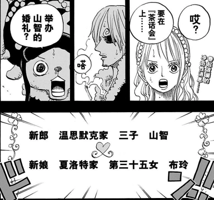 随后布鲁克急中生智，诱骗乔拉恢复小提琴和魂之丧剑并击败对方，让大家变回了原样。四人联手痛扁乔拉，接受罗的指令将船只驶近格林比特，遭遇多弗朗明哥的袭击。此时山治赶到，却不敌对方。得到了罗的相助后，让安全保卫小队及山治带凯撒·库朗逃向佐乌。意想不到的是，在逃向佐乌的途中，BIG·MOM的海贼船出现在万里阳光号后方。
佐乌岛篇
成功逃脱BIG MOM的海贼船后，乔巴等人成功登上佐乌岛。在犬岚公爵疗养所，发现毁灭毛茸茸公国的武器就是凯撒研发的毒气这一事实。路飞遇到了岛上的原住民毛皮族，并被兔子毛皮少女加洛特突袭，随后于乔巴会合。乔巴和娜美等人在佐乌岛因为帮助了毛皮族，所以当地居民送给他们很多丰厚的礼物，还给他们穿金戴银。
蛋糕岛篇
在布蕾的“镜中世界”，让加洛特叫他“乔巴大哥”。在蛋糕岛的镜中世界寻找同伴，通过询问镜中世界的镜子寻找同伴。与同伴商量如何对付四皇。
获奖荣誉
| 时间 | 活动 | 名次 |
|---|---|---|
| 2003年 | 海贼王第二回人气投票 | 第四名 |
| 2006年 | 海贼王第三回人气投票 | 第四名 |
| 2008年 | 海贼王第四回人气投票 | 第四名 |
| 2014年 | 海贼王第五回人气投票 | 第七位 |
合体技
| 名称 | 属性 |
|---|---|
| 必杀乌索乔·铁锤彗星 | 在阿拉巴斯坦篇对抗鼹鼠人时使用，乌索普把乔巴的鹿角当发射台，将铁锤发射出去命中敌人 [22]。 |
| 海贼6号合体·巨型·大皇帝 | 鬼魂岛篇使用，弗兰奇的第15号战略，乔巴、弗兰奇、乌索普、罗宾、索隆、山治合体成巨大的战士，但最后被罗宾以一句“身为一个人这实在太丢脸”吐槽而告失败，乔巴担当头部。 |
| 罗宾乔巴背桥摔 | 鬼魂岛篇使用，乔巴以擒抱抓住对手后，再以罗宾的能力在乔巴下方使出“脚下开花”，在半空中将对手摔落地面。 |
| 空军樱花SHOOT | 山治将乔巴踢向高空，乔巴再释放巨大的“刻蹄·樱”攻击对手 |
| 超级弗兰巴 重拳 | 鬼魂岛篇草帽小子海贼团VS僵尸奥兹时使用，弗兰奇使用独门技术（空中漫步）造了一个临时木梯，乔巴在后拿材料，然后两人联合重拳。 |